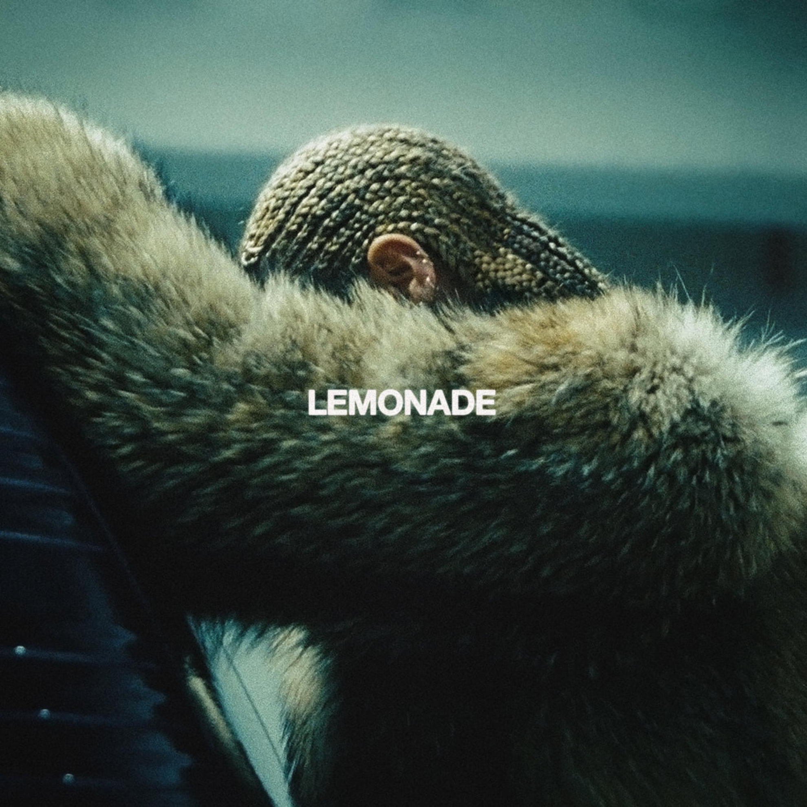
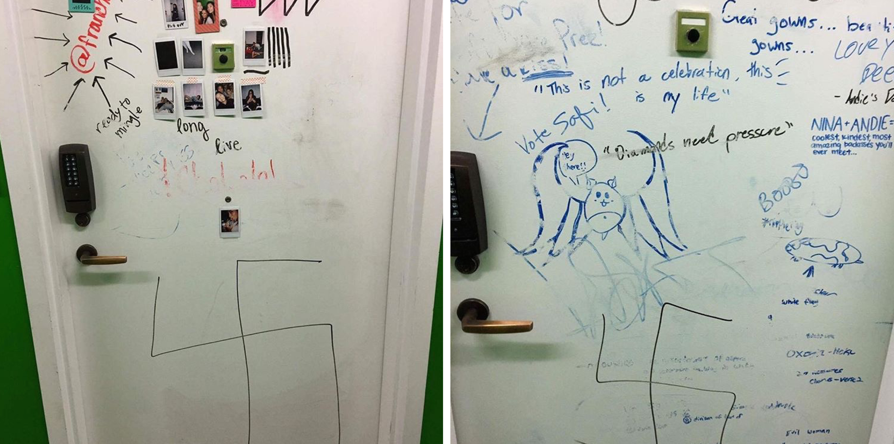
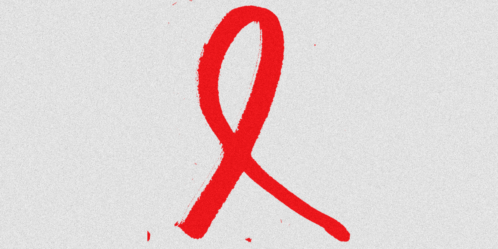
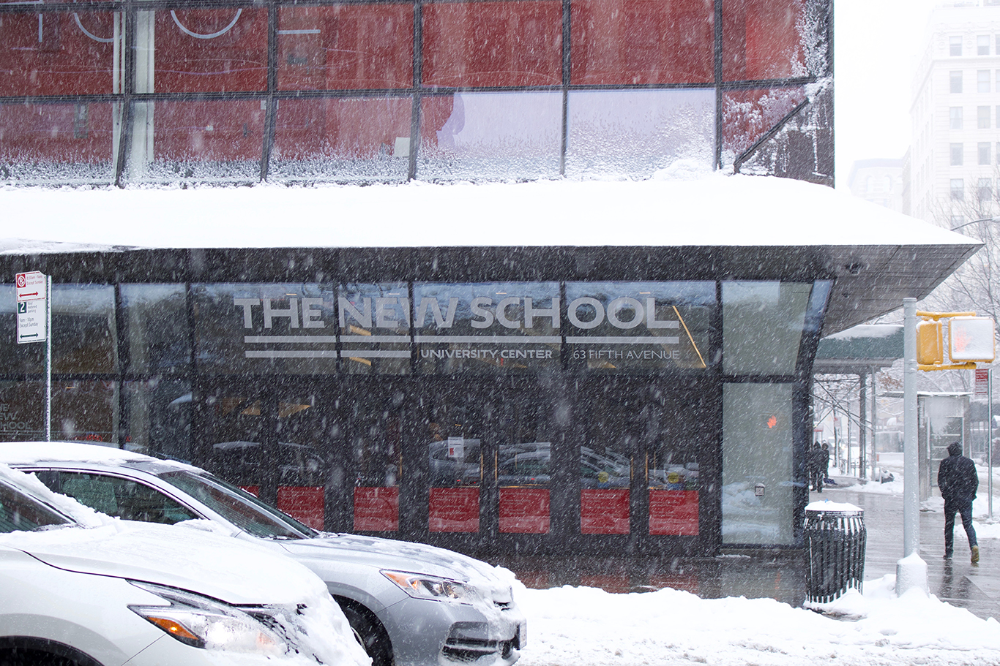
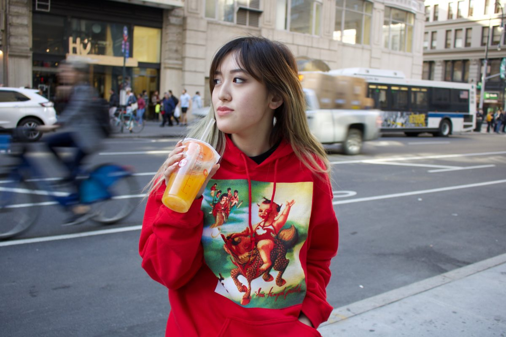
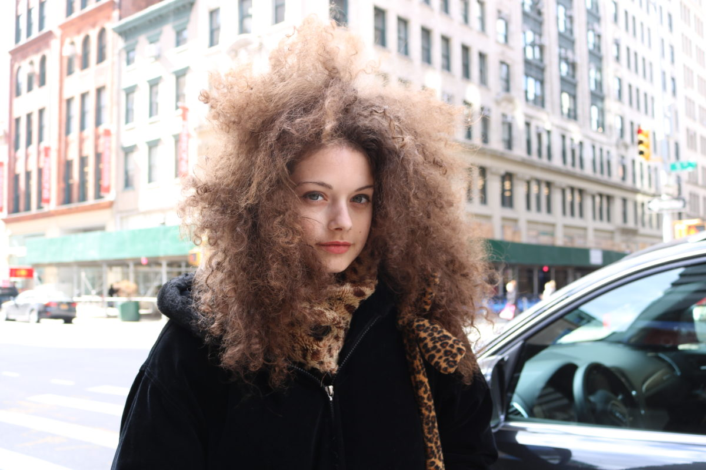
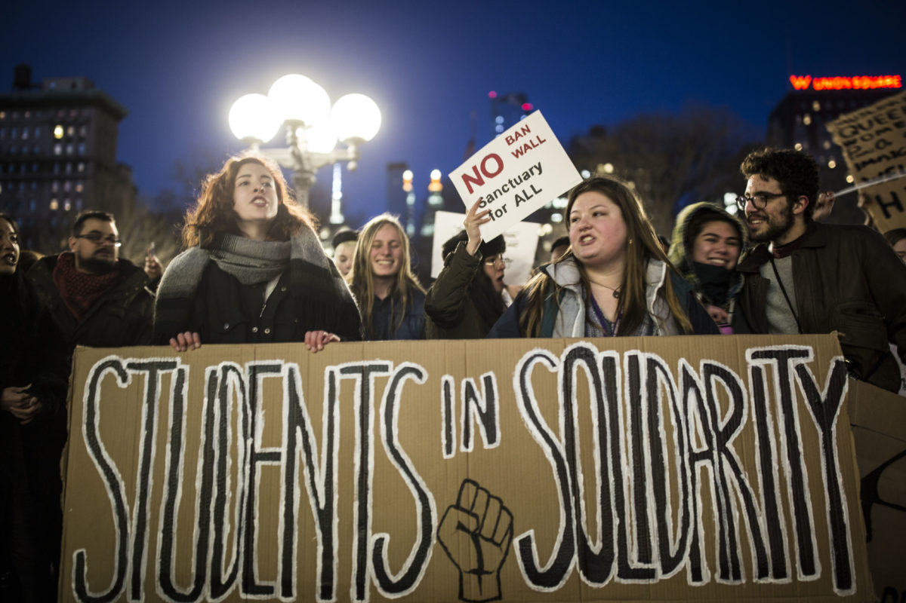

Orlando Mendiola
I am currently a junior studying Journalism and Design with a minor in Photography at The New School in New York City. I am currently the Photography and Web Production editor for my college paper, The New School Free Press. My responsibilities include managing all photo related content for the site, taking photos when needed, and posting articles ereryday while making sure there is consistency with every story's design. This site is meant to capture a sample of my best work and will be updated as I create new content.
Designed by Orlando Mendiola
News Stories
Beyoncé Selects Parsons for New Scholarship
Apr 25, 2017
Breaking news story I covered about Beyonce offering a $25,000 scholarship at The New School. The story broke overnight and I was able to report, interview, and publish the story before noon that day.

Students Wake Up To Doors Vandalized With Swastikas At Kerrey Hall
Nov 12, 2016
I covered this breaking news story with another reporter involving the one of the dorms. A handful of room doors in the Kerrey Hall residence building were vandalized with swastika signs. The article received national coverage and it was linked to in the Washington Post.

National Transgender HIV Testing Day
Apr 18, 2017
I worked on this article for National Transgender HIV Testing Day, which was on April 18. Our schools health service center offers the anti-HIV medication PrEP and PEP. The medications have been offered for only a year and I thought it was important we make students aware of that health services offer this medication.

Everything You Need To Know About The Feb. 9 New School Snow Day
Feb 9, 2017
Breaking news story I covered when snowstorm Nico made its way into NYC. I was available to report on all the cancelled events that were supposed to take place and photograph the University Center.

Photo Stories
Signs of the Times
Jan 24, 2017
With camera in hand I helped document the Women's March on NYC on January 21. Another New School Free Press reporter was also there and helped with the text portion of the story.

Fashion on 5th
Apr 15, 2017
“Fashion on 5th” is a weekly photo story. I was the photographer and helped the reporter covering the story scout people. The New School is filled with people who are not afraid to express themselves with fashion and this weekly column documents the many looks that students put together.

Fashion on 5th
Mar 3, 2017
“Fashion on 5th” is a weekly photo story. I was the photographer and helped the reporter covering the story scout people. The New School is filled with people who are not afraid to express themselves with fashion and this weekly column documents the many looks that students put together.

New Schoolers Join Citywide Student Rally Against Trump Immigration Ban
Jan 30, 2017
The Co-Editor in Chief of the New School Free Press reported on a student-wide protest against President Donald Trumps immigration ban. I was there to help document the protest by taking photos which were used in the piece.
